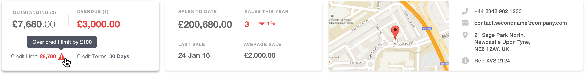
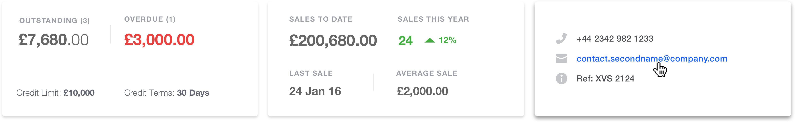

KPI Cards
Another React-based pattern that the developers worked on were the KPI cards. - Depending on the amount of data saved per contact, the cards flex adaptively. For example, if there is an address saved, Google maps will be surfaced. Alternatively, if users sell to foreign clients, then they can view both their home currency and the client’s native currency.
all data available
Selling to a foreign contact

no address saved
